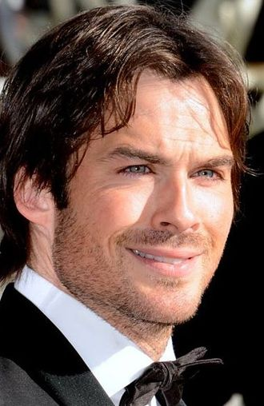
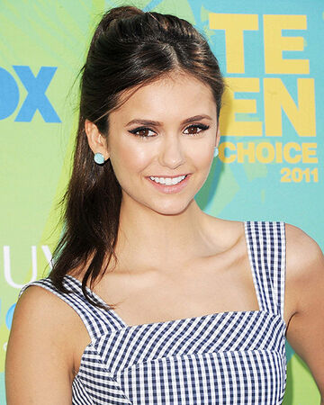
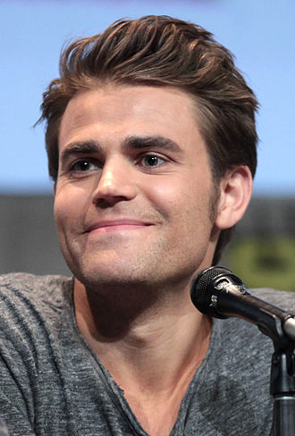
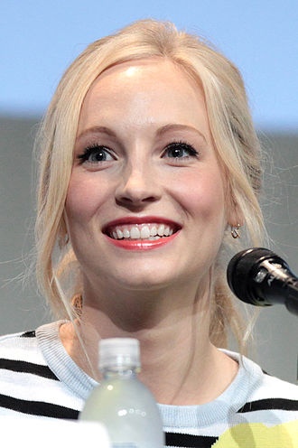
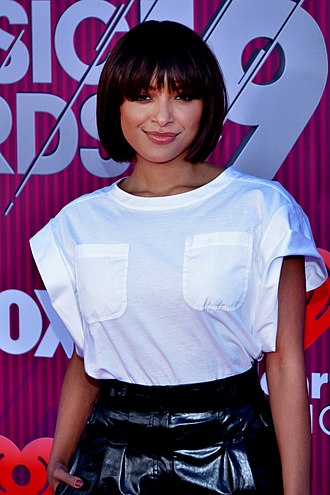

| Información |
Imagen |
- Ian Somerhalder
- Ian Joseph Somerhalder1 (Covington, Luisiana, 8 de diciembre de 1978), es un actor y modelo estadounidense. Saltó a la fama por su actuación como Damon Salvatore en The Vampire Diaries.
También ha colaborado en otras series de televisión como Lost y Smallville.
|
 |
- Nina Dovred
- Nikolina Kamenova Dobreva (Sofía; 9 de enero de 1989) mejor conocida como Nina Dobrev es una actriz búlgara-canadiense. Conocida principalmente por interpretar a Elena Gilbert/Katherine Pierce/Amara/Tatia en la serie de The CW The Vampire Diaries, basada en la novela homónima de L. J. Smith, y a Mia Jones en la serie Degrassi: The Next Generation.
|
 |
- Paul Wesley
- Pawel Tomasz Wasilewski1 (New Brunswick, Nueva Jersey, 23 de julio de 19822), más conocido como Paul Wesley, es un actor, productor,director y modelo estadounidense. Es principalmente conocido por su papel de Stefan Salvatore en la serie The Vampire Diaries.
|
 |
- Candice King
- Candice Rene King (nacida Accola; Houston, 13 de mayo de 1987)1 es una actriz y cantautora estadounidense conocida por su papel de Caroline Forbes en la serie de The CW, The Vampire Diaries.
|
 |
- Kat Graham
- Katerina Alexandre Hartford Graham (Ginebra; 5 de septiembre de 1989), conocida por el nombre artístico de Kat Graham, una actriz, cantante, bailarina y modelo estadounidense-suiza. Es conocida por interpretar el papel de Bonnie Bennett en The Vampire Diaries de The CW.
|
 |